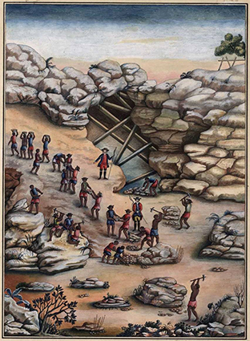

Escravos britadores de pedra para a extração de diamantes, de Carlos Julião. Aquarela sobre papel, século XVIII. Crédito: REPRODUÇÃO/FUNDAÇÃO BIBLIOTECA NACIONAL, RIO DE JANEIRO, RJ
Serro Frio: trabalho de lavagem do cascalho, feito por escravos, de Carlos Julião. Aquarela sobre papel, século XVIII. Crédito: REPRODUÇÃO/FUNDAÇÃO BIBLIOTECA NACIONAL, RIO DE JANEIRO, RJ

Extração de diamante, de Carlos Julião. Desenho, século XVIII. Crédito: REPRODUÇÃO/FUNDAÇÃO BIBLIOTECA NACIONAL, RIO DE JANEIRO, RJ
Os lavadores de diamantes, de artista desconhecido. Gravura, século XIX. Crédito: REPRODUÇÃO/PINACOTECA DO ESTADO DE SÃO PAULO, SÃO PAULO, SP
![Imagem de doze pessoas em uma paisagem alagada com morros ao fundo. Nove pessoas estão vestindo pouca roupa; seis delas estão sentadas em um largo banco que vai do lado esquerdo ao direito da imagem. Uma está em pé à frente do banco com um braço levantado; duas estão caminhando ao fundo. Todas elas têm uma peneira nas mãos. Há também três pessoas uniformizadas com chapéus e casaco azul: uma sentada na ponta do banco do lado esquerdo, outra em pé do lado direito e a terceira encostada em um tronco na ponta direita.](../resources/images/enriquecimentos/carrossel/carrossel_e649673bc_8/g24_7ano_e649673Bc_8d.jpg)